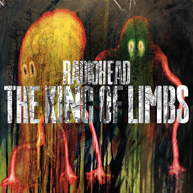

Discography
Home
Biography
Discography
Music
My Home Page
Pablo Honey (1993)
The Bends (1995)
OK Computer (1997)
Kid A (2000)
Amnesiac (2001)
Hail to the Theif (2003)
In Rainbows (2007)

The King of Limbs (2011)
A Moon Shaped Pool (2016)
Related Links
Website
Wikipedia
Instagram
Facebook
Twitter
Spotify